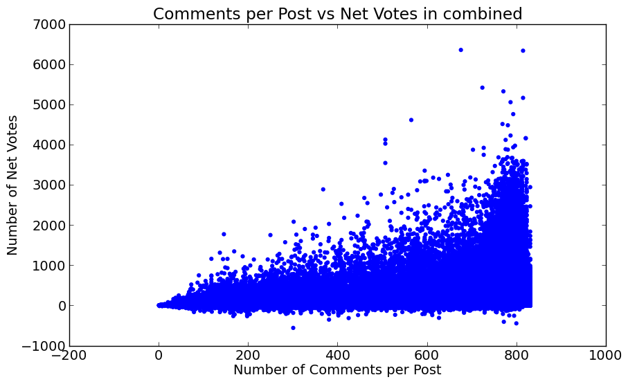
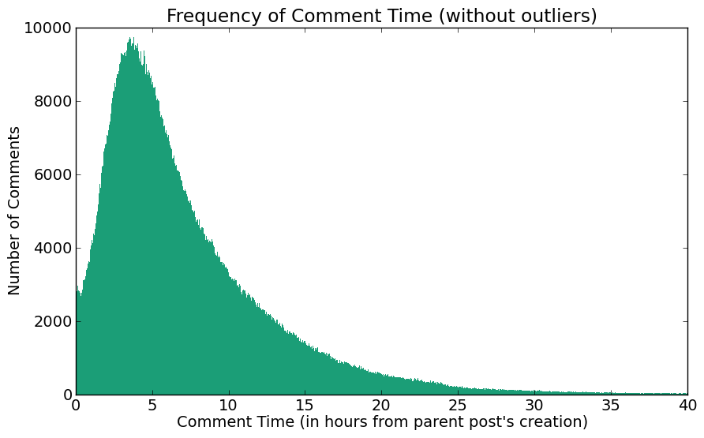
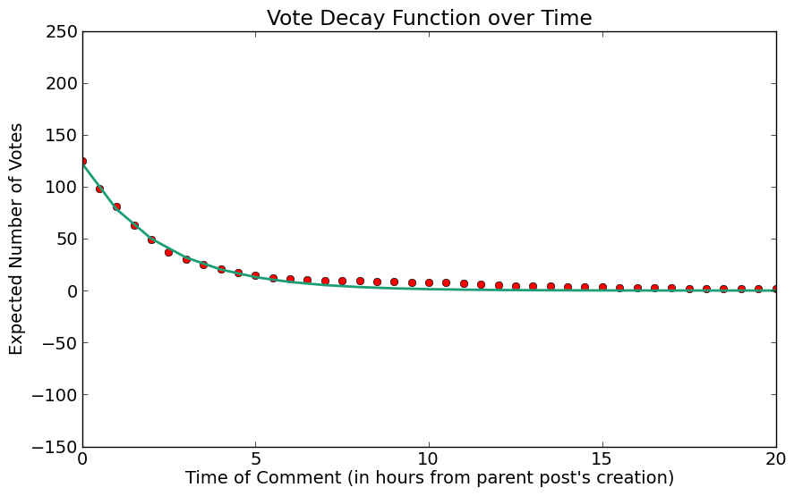

JANKY OAR
A LOOK INTO THE WORLD OF REDDIT


- SENTENCE PREDICTOR
- VOTE PREDICTOR
A LOOK INTO THE WORLD OF REDDIT
First, a little explanation on what reddit is.
In order to explore the data we had collected, we decided to compute different metrics of the comments. To begin, we computed the following metrics for all rows in our dataframes:
We determined that these metrics would not be terribly useful as features, as they span the possible Y values.
The next features we looked at related to the posts that the comments were on. We wondered whether comments on posts with many comments had more upvotes than comments on posts without many comments. Below is a graph over the entire dataset, comparing comments per post vs net upvotes.
Again, while there is an upward trend for the max at any X, the values still span the Y values, and is therefore not a terribly useful feature. Next we took a look at vote decay with time - how well do comments that are posted early perform compared to those that are posted late? Below we show the number of comments by time and the average net vote count as a function of time, grouping comments by the half-hour.
 We found that comments posted in the first half-hour performed best, with scores quickly decaying after that.
Finally, we explored word frequency counts and their impact on upvotes. Below we show a graph of the top 20 animal words in /r/aww, and the average upvotes comments containing those words receive.

We use the comments and upvotes data within a subreddit to build a predictor on how many votes a comment will receive on a given subreddit. We treat this problem as an example of supervised learning, where we want to perform a regression from feature vectors on text onto an upvote score. To do this, we separated the process into multiple parts.
[0,1]X to our normalized upvotes Y. Our supervised learning methods include:
Below are our cross validation training and test
errors for various combinations of (feature model, reducer model, learning model). We defined the error of a feature vector x with predicted normalized upvotes y' and true normalized upvotes y as |y' - y|. The error of a data set is the sum of all the errors of individual feature vectors x. Overall, we conclude that the biggest impact on the error of our data set was the feature model we chose--given the model, the target dimension size, the reduction model, and learning model had less impacts on the error.

Ngram error. This plot shows how the error changes as we increase N for our Ngram model. We hold the reducer (select 5000 best features) and learner (naive bayes) constant.

LDA error. This plot shows how the error changes as we increase the number of topics discovered by our Latent Dirichlet Model. For these experiments, we did not use a reducer, and we used naive bayes as our learner.

Reduced dimensionality error. This plot shows how the error changes as increase the reduced dimensionality size. Here, we use 6-grams, naive bayes, and we use select k best as our reducer model.

Error by Reduction Model. This plot shows how the error changes as we change our reducer model. We use 6grams with 1000 as our reduced dimension size, and we use naive bayes. We used select k best, PCA using a linear kernel, and PCA using the cosine kernel.

Error by Learning Model. This plot shows how the error changes as we change our learner. We tested these learners: naive bayes, SVM using a linear kernel, SVM using a radial basis function kernel, SVM using a polynomial kernel (degree 3), K nearest neighbors, and decision trees. We test all of these against (6 gram, select best 100 features) and (LDA with 1000 topics, no reducer).
Using N-grams, we can build a predictor for the next word in a sentence, given the current word. To do this, we compute the sum x' of all feature vectors x. The jth component of this vector represents how important ngram j is in the subreddit. Sort these ngrams based on their scores in decreasing order.
Now given a word w, we find all ngrams starting with word w, pick the ngram with the highest score of these ngrams, and return the next word in that ngram. To add some nondeterminism to this, we can pick the next word after word w using a multinomial distribution, where the probability vector for the next word is given by the normalized scores of the ngrams whose first word is w. As an example of sentences built with this predictor, see below (we used 6-grams on the /r/Liberal subreddit, max sentence length 20):
One way of analyzing the comments in a subreddit is to perform unsupervised learning on feature vectors of the comments to determine which are "most similar" to one another. To do this, we employ K-means clustering, which attempts to find K means in the data set. We cluster using feature vectors built from the Ngram and LDA models. See below for examples of clusters we found (most common words in these clusters and their counts) and a human readable name we gave to the cluster. These examples were generated on the /r/Liberal dataset using 1-grams with 10000 as our reduced dimension size, and creating 8 clusters:
"Wage Increase." 83 items. wage 208, minimum 177, would 91, people 73, increase 51, cost 49, money 45, workers 45, wages 39, pay 37, business 35, prices 35, goods 35, jobs 34, less 33, raising 33, price 32, inflation 32, raise 32, economy 30, much 29, make 29, increases 28, time 27, companies 26, level 26, making 26
"Trayvon Martin Case." 124 items. good 104, zimmerman 81, martin 35, evidence 16, thing 15, would 14, one 14, trayvon 14, guy 13, george 12, like 12, said 11, know 11, luck 11, really 11, could 10, people 10, think 9, fact 9, facts 9, go 8, never 8, say 8, black 8, job 8
"Obamacare." 104 items. tax 133, taxes 56, would 42, income 40, people 38, rate 34, government 31, much 29, pay 28, insurance 26, money 20, think 17, want 16, health 16, even 15, spending 15, obamacare 14, actually 14, rates 14, also 14, higher 14, like 14, work 13, get 13, jobs 13, business 13